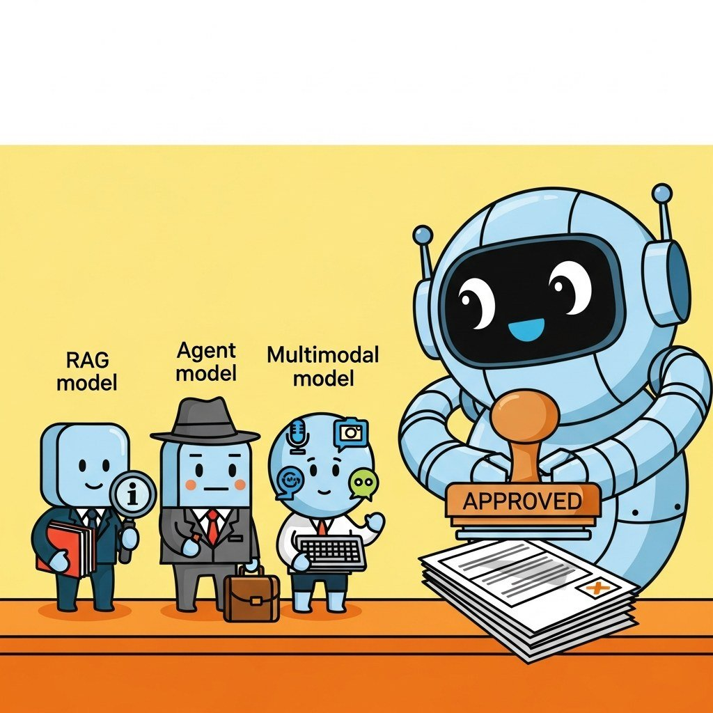

"Specialized evaluation is what general-purpose benchmarks miss."
Eval, Trace-Sniffing AI Agent
Chapter 42 covered general evaluation. This chapter goes deeper: RAG eval (Ragas, BEIR), agentic eval (AgentBench, SWE-Bench, GAIA, tau-bench), simulation-based eval, code-gen eval, and multimodal eval, all the families where scalar text benchmarks fall short.
Evaluation methodologies for the 2026 frontier: RAG faithfulness, agentic trajectories, simulation-based eval, code-gen pass@k, multimodal grounding, and long-context benchmarks.
Chapter Overview
Specialized evaluation is what general-purpose benchmarks miss. This chapter walks the four specialized eval families that the 2024 to 2026 community standardized on: RAG evaluation (Ragas, BEIR, faithfulness vs groundedness), agentic evaluation (AgentBench, SWE-Bench, GAIA, tau-bench), simulation-based evaluation (tau-bench, MM-tau-p2), code-generation evaluation against test suites, and multimodal evaluation across vision-language, audio, and video.
Each of these eval families targets a failure mode that scalar text benchmarks cannot catch. By the end of this chapter you will know which eval to run, how to interpret its score, and where contamination, reward-hacking, or trajectory-vs-outcome confusion can mislead you.
- Apply Ragas and BEIR to evaluate RAG systems across retrieval, generation, and end-to-end layers.
- Distinguish faithfulness from groundedness and explain why both matter operationally.
- Architect an agentic evaluation harness for AgentBench, SWE-Bench, GAIA, or tau-bench.
- Implement simulation-based evaluation for stateful, multi-turn agent trajectories.
- Evaluate code generation against a test suite with HumanEval-style or SWE-Bench-style scoring.
- Design multimodal evaluation across vision-language, audio, and video without collapsing dimensions prematurely.
Prerequisites
- Evaluation foundations from Chapter 42
- RAG fundamentals from Chapter 32
- Agent foundations from Chapter 26
Sections
- 43.1 RAG Evaluation: Ragas, BEIR, Faithfulness and Groundedness How to evaluate retrieval-augmented generation systems across retrieval, generation, and end-to-end layers, with Ragas, BEIR, and the operational distinction between faithfulness and groundedness. Entry
- 43.2 Agentic Evaluation: AgentBench, SWE-Bench, GAIA, τ-bench How to evaluate LLM agents whose trajectories include stateful tool calls, side effects, and multi-step rollouts, with the 2024-2026 benchmark cube and code for harness, scoring, and contamination che Intermediate
- 43.3 Simulation-Based Evaluation: τ-bench and MM-τ-p2 Static evaluation breaks the moment your agent has to hold a conversation. Intermediate
- 43.4 Code-Generation Evaluation Code generation is the one LLM task where the ground truth is a test suite. Advanced
- 43.5 Multimodal Evaluation: Vision-Language, Audio, Video Multimodal evaluation is text evaluation with several extra dimensions that no scalar metric collapses cleanly. Advanced
Objective
Apply specialized evaluation suites to the artifacts from earlier labs: Ragas on the RAG bot (Lab 32) and an agent-trajectory eval on the Wikipedia agent (Lab 26). By the end you will have category-specific scores for each system and a sense of which dimensions to optimize next.
Steps
- Step 1: Ragas for RAG. Take 20 question-answer pairs from Lab 32. Run
ragas.evaluate(dataset, metrics=[faithfulness, answer_relevancy, context_precision, context_recall]). Save scores. - Step 2: Diagnose RAG weakness. Look at the 5 worst context_recall failures: was the right doc not in the index, not in top-k, or retrieved but not used? This is the diagnostic chain.
- Step 3: Trajectory eval for the agent. Take 20 Lab 26 traces. Define a rubric: did the agent (a) call appropriate tools, (b) avoid redundant calls, (c) stop when confident. Use
langsmith.evaluation.trajectoryor hand-roll a judge prompt. - Step 4: Long-context spot-check. Feed Lab 26's agent a 50k-token Wikipedia article and place an answer at depth 25k. Confirm retrieval works (this is the Needle-in-a-Haystack pattern).
- Step 5: Report card. Render a one-page Markdown report: RAG metrics, agent trajectory scores, long-context check. Highlight the single biggest improvement opportunity.
- Step 6: Apply one fix. Pick the worst metric. Apply one fix (re-chunk, change embedder, add reflection). Re-measure. Document delta.
Expected Output
Expected time: 3 hours (chains from Labs 26 and 32). Difficulty: intermediate. Artifact: a domain-specific eval report + one measured improvement.
What's Next?
Next: Chapter 44: Online Evaluation, Observability, and Production Monitoring. Offline evals tell you what the model did on a benchmark you chose. Production traffic tells you what it did on the traffic your users actually sent. Chapter 44 covers distributed tracing, OpenTelemetry for LLMs, drift detection, online A/B testing, eval-as-product platforms (Braintrust, Langfuse, Helicone), and the alerting setup that catches "the model got 5% dumber overnight" before customers do.